Fresh cuts
Broken down in house, trimmed properly, and cut to whatever thickness you actually want.
- Scotch, sirloin, eye fillet, rump
- Frenched lamb racks and forequarter chops
- Osso buco, shanks and slow-cook cuts
- Rolled and netted roasts
West End · Timaru
A real butchery on the corner of Church Street. Whole carcasses broken down in house, sausages made on site, and a counter worth crossing town for.
Beef, lamb and pork broken down here, not delivered pre-portioned in a box. That is the difference you taste, and it is why the counter looks different every week.
Broken down in house, trimmed properly, and cut to whatever thickness you actually want.
Made on site and hung in the chiller, in the flavours that keep selling out.
The marinating and stuffing already done, so a good dinner is twenty minutes away.
The bits that finish the plate, made fresh alongside everything else.
Trays of skewers glazed and dusted the morning they go out — satay, honey soy, smoky BBQ. Straight onto a hot barbecue or a pan, nothing else needed.
It is the same meat that sits in the cabinet as steak. We just did the fiddly part for you.
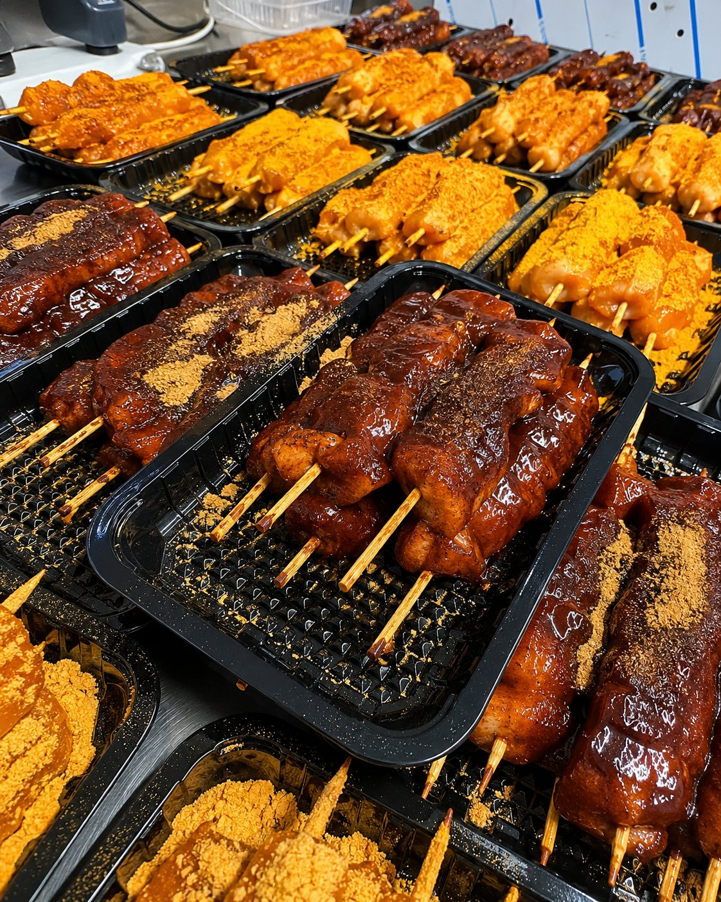
Beef spirals rolled with cheese, jalapeño and herbs, and chicken breasts wrapped in streaky bacon with cranberry or apricot through the middle.
They look like a lot of effort and they take none. Into a dish, into the oven, done.
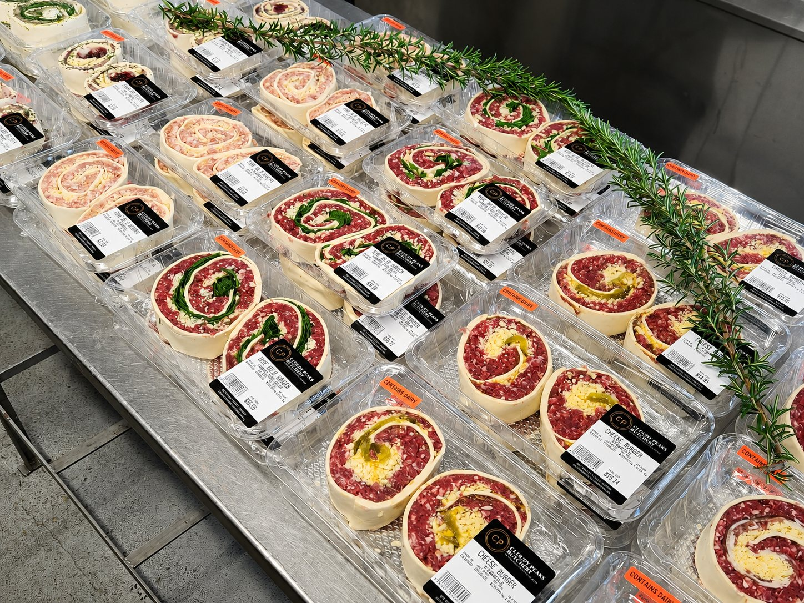
Bring us your animal and tell us how your family eats. We hang it, break it down and pack it the way you want it — steak thickness, roast size, how much mince, how many sausages.
Everything comes back labelled and boxed, ready for the freezer, with nothing swapped out along the way. What goes in is what comes home.
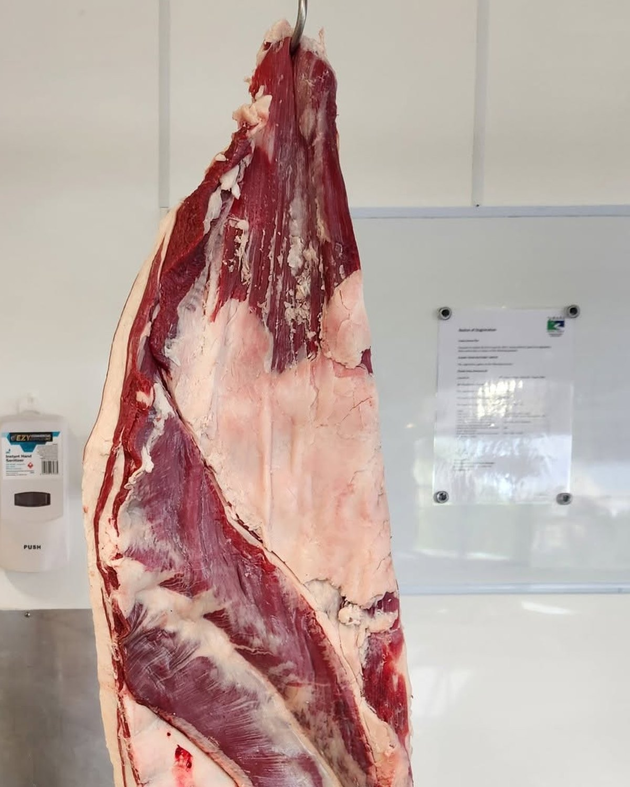
No stock photography. This is the counter, the chiller and the bench, on an ordinary week.
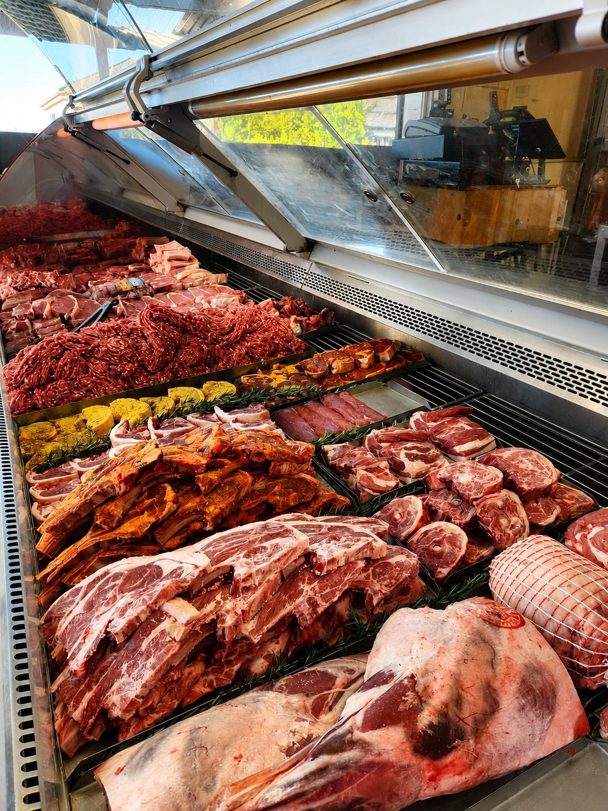
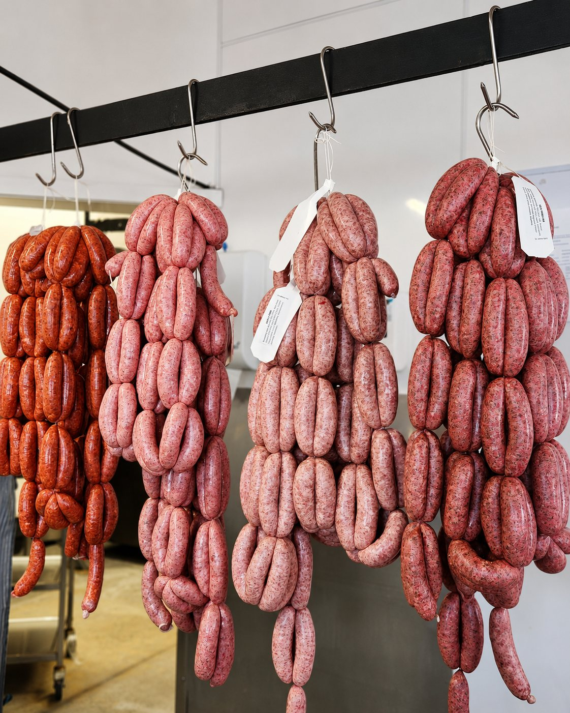
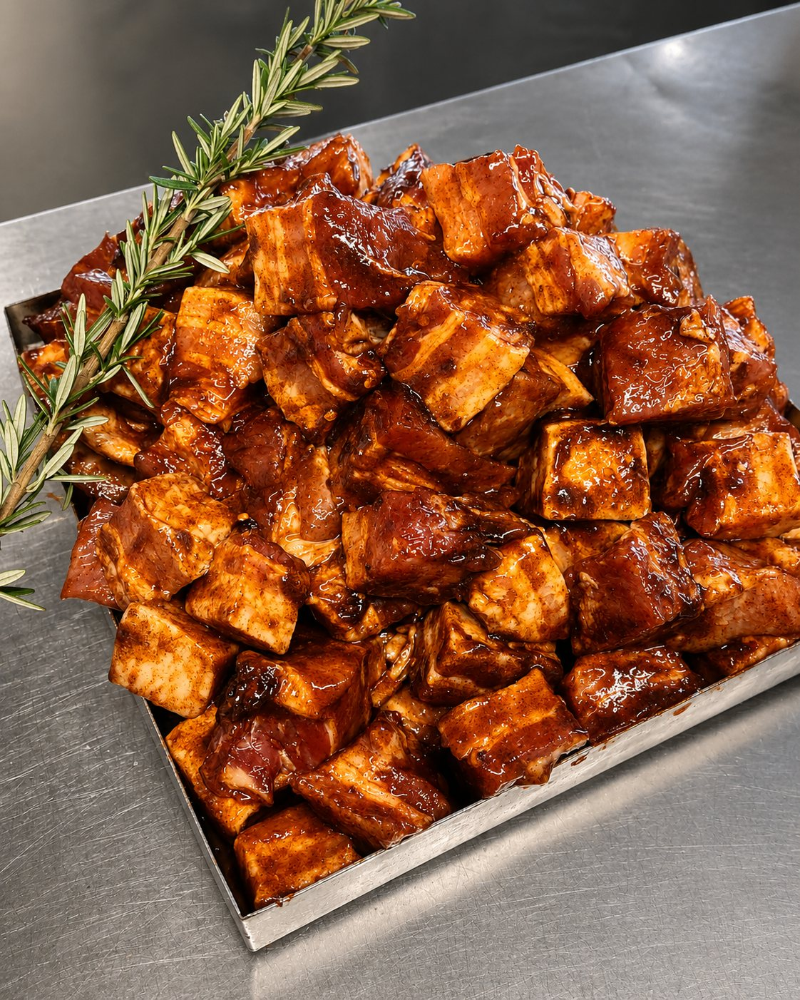
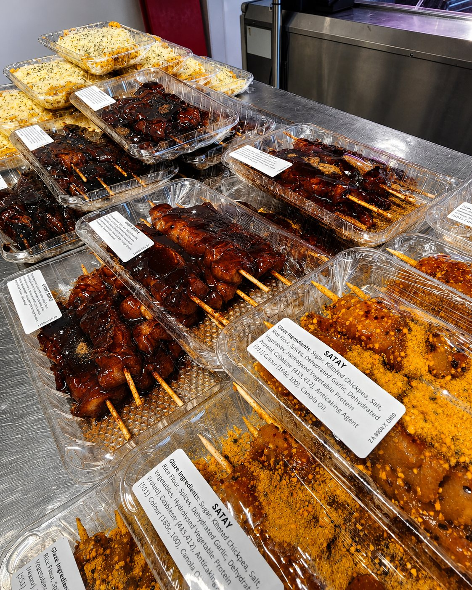
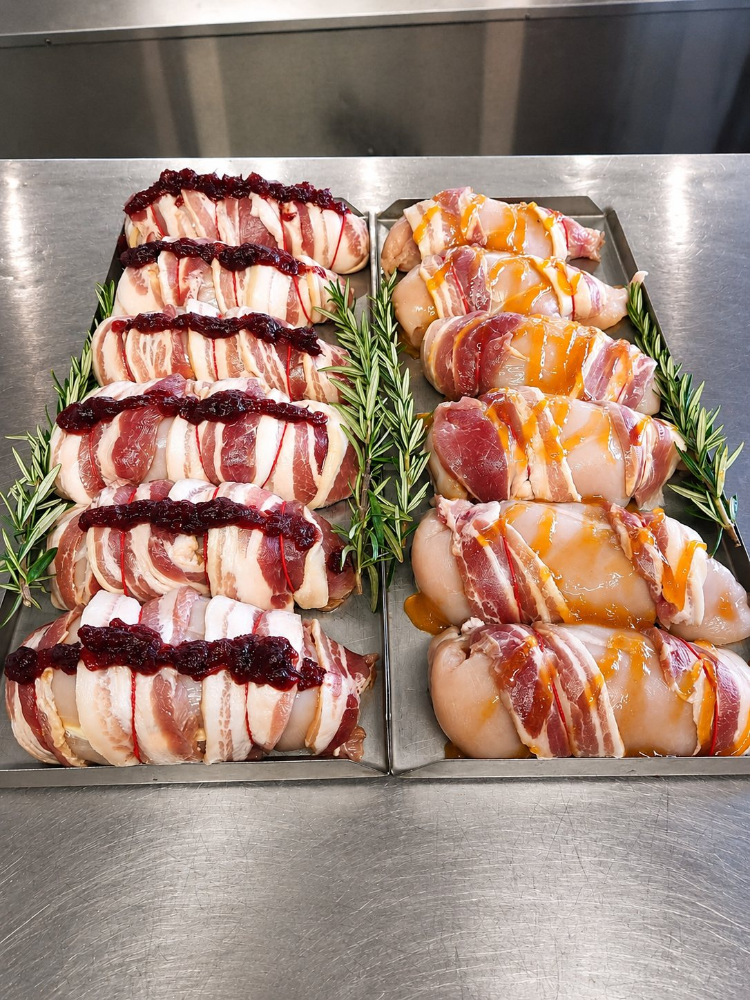
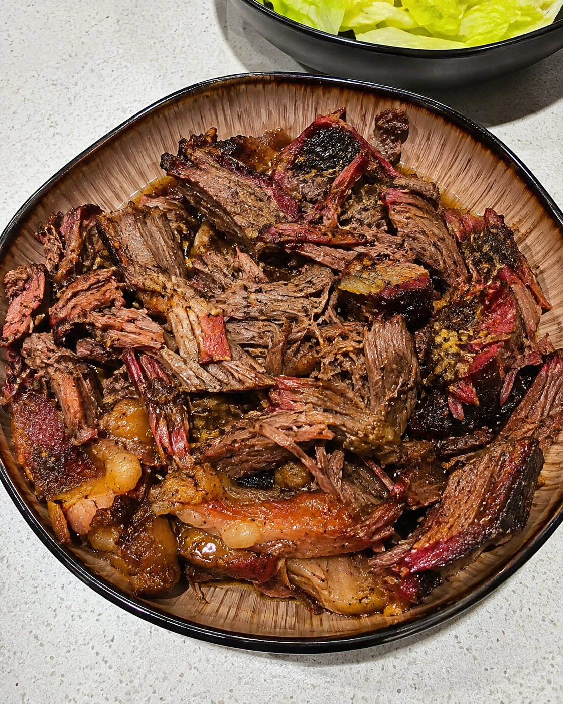
There has been a butcher working on the corner of Rathmore and Church Streets since the late 1800s. Generations of Timaru families have bought their Sunday roast off this corner.
When Burgers Butchery closed its doors in February 2024, that run stopped for the first time in well over a century. The building sat quiet for seven months.
In September 2024 the lights went back on. Marie Murdoch and her husband Kine reopened the site as Cloudy Peaks Butchery — an independent butcher back on the corner, doing the job the way it has always been done here.
Reported by The Press / Timaru Herald, 30 September 2024.
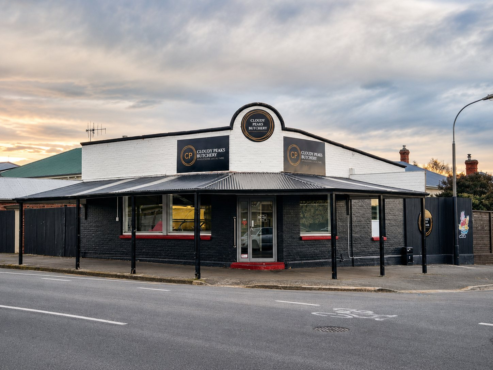
Cloudy Peaks Butchery sits on the corner of Church Street in West End, Timaru — the black building you have driven past a hundred times. Inside it is a working butchery: rails, hooks, a block, and people who know how to use them.
We take whole animals and break them down ourselves. That is a slower way to run a shop, and it is the reason we can cut a steak to the thickness you ask for, put your own trim through the sausage filler, and tell you exactly where a piece of meat came from.
South Canterbury has good farmers and it deserves a butcher who does the job properly. That is what we turn up for.
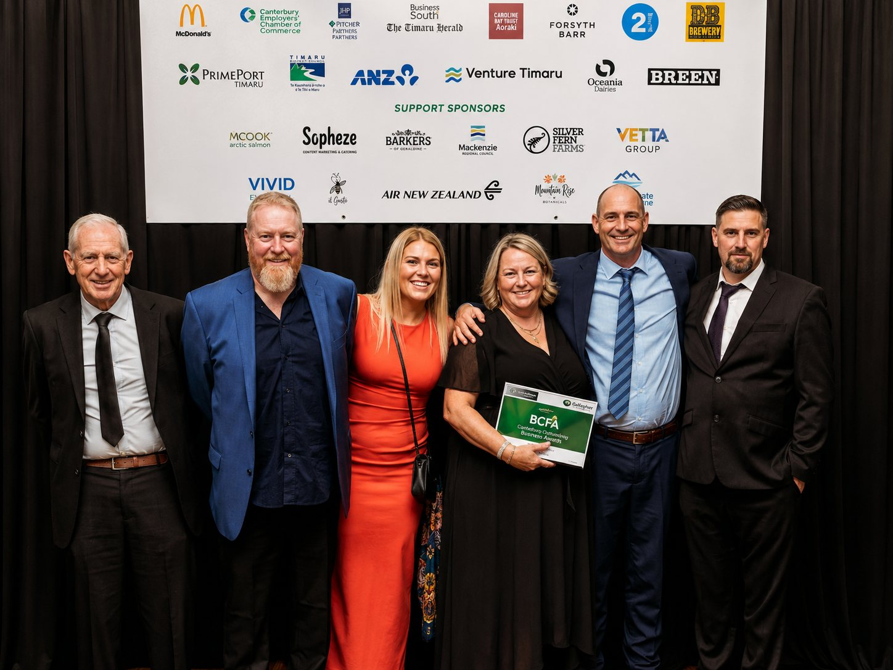
The black corner building at Rathmore and Church Streets, West End. Street parking right outside.